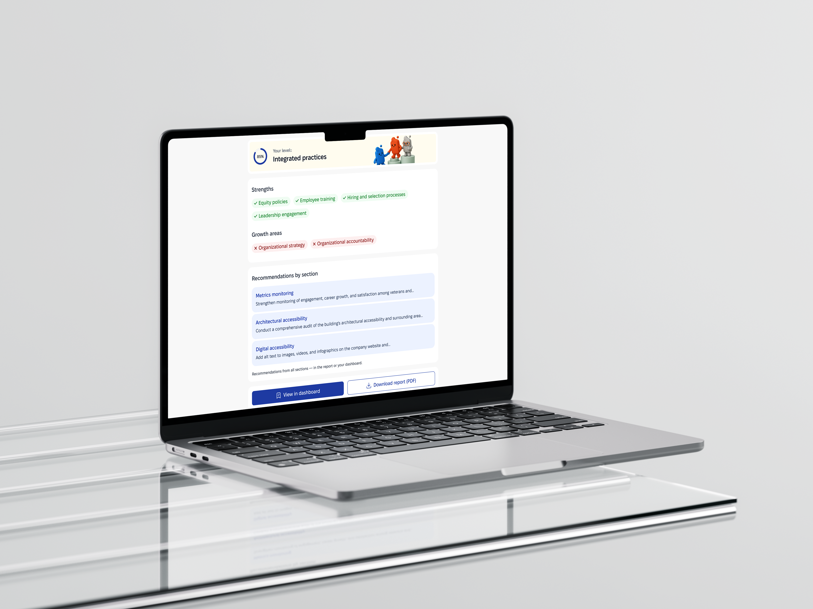
ATJ DEI Audit
Turned a heavy business process into a digital service, companies complete a diagnostic and find out exactly where they stand on readiness to hire veterans and people with disabilities.
Context
Source:
The organization came with an inclusivity questionnaire containing roughly 300 unstructured questions in a Google Sheet. It was a data-heavy, user-unfriendly format that failed to account for the different needs of businesses.
I turned it into a modular digital product: 15–16 structured sections and a complete path for enterprise clients, plus a separate, shortened 30–40 question version for small and medium-sized businesses — instead of one fixed scope for everyone.
Goal:
Move inclusivity assessment out of Google Forms and Excel sheets into a digital service. Two core users: enterprise clients completing a full diagnostic as part of a corporate process, and small-to-medium businesses completing a lighter version on their own initiative.
Before:
Raw table data dumped straight on the user.
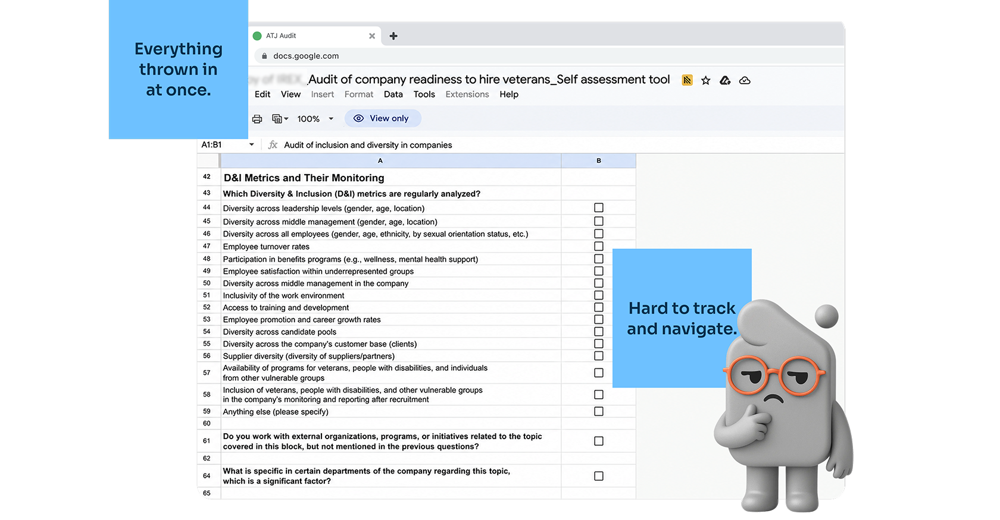
After:
The complex questionnaire became a modular system.
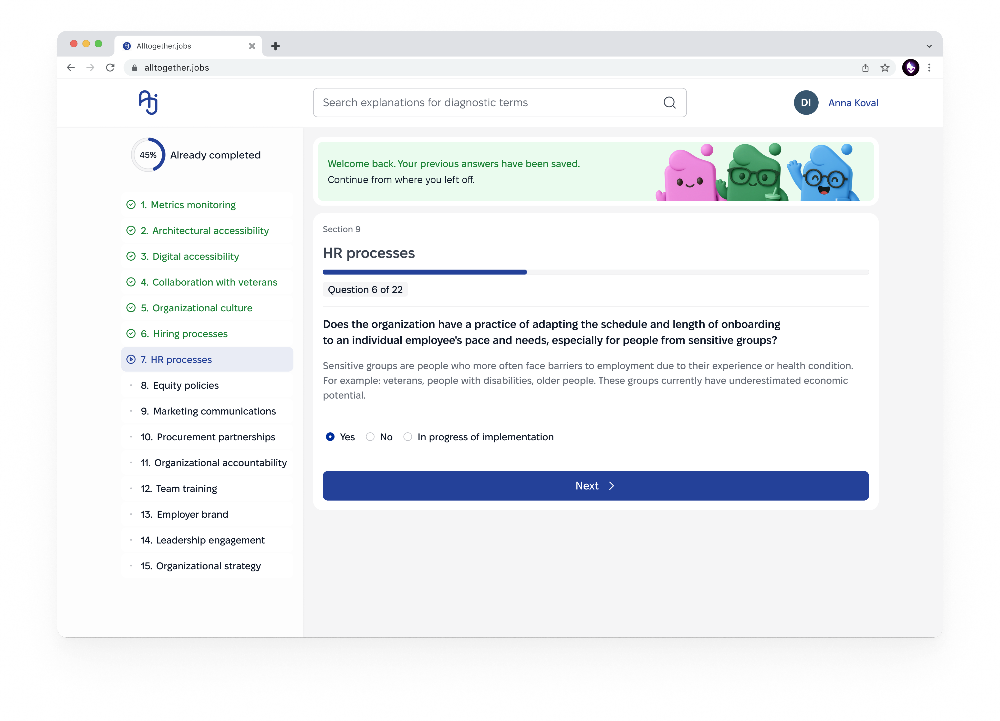
~300 Questions
In total audit form
Two Product tracks
Enterprise, and Small Medium Business,
18 User interviews
7 Enterprise, + 11 SMB
4 Key Decisions
My Scope
Role:
I served as Lead UX Designer on the project. The team also included a methodologist (question content and scoring criteria), a developer (implementation), and a UX copywriter (text elements, microcopy).
My area of responsibility: research, information architecture, wireflows, UI built on an existing design system I developed during a previous collaboration, and taking the large audit through to a clickable prototype.
Constraints:
A fixed budget and timeline led me to ship a first MVP generation, meant I couldn't measure impact metrics, and left the Employee Survey at the hypothesis and basic user-flow stage.
Key Decisions - Accessibility
Problem
The audit is taken by people of varying technical skill and ability; legal terminology and visual noise raise anxiety and the risk of dropping out midway.
Solution
Minimum 4.5:1 text contrast, visible focus indicators on every interactive element for progress and errors, and no jarring animations or flashes between steps.
Why?
A product about inclusivity that isn't itself accessible undermines its own stated mission — this isn't a separate checkbox, it's a direct consequence of the project's own theme.
The Challenge
One architecture, two audiences
~300 questions in a plain-text table the team called it "a nightmare." One base architecture had to serve two audiences: large businesses complete it regardless, but SMBs, doing it on their own time, drop off the moment it feels like unnecessary evaluation. That's why the next focus is Small Medium Business (SMB).
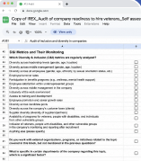
Audit of the initial state:
- No sense of scope or timing upfront.
- No modularity, same question set for everyone.
- No saved progress, no completing it in stages.
- Google Sheet format doesn't scale across segments.
Research
Methods:
Analog testing (learning platforms with modular test flows, a government service analog as a benchmark for scope and structure), in-depth interviews (7 large-business companies, 11 SMB representatives), a quantitative SMB survey (71 responses), and desk research for the Employee Survey (22 segments of evidence on trust and behavior in anonymous surveys).
Data processing:
The volume of research material (the quantitative survey and interview transcripts) was too large for manual analysis, so initial structuring went through Claude (Figma MCP), followed by manual synthesis in FigJam.
Analogs referenced:
Hypotheses (Hypothesis Canvas):
Several product hypotheses were formulated for SMB. After team discussion, one was rejected unanimously, and two others were merged into one, based on every team member independently choosing elements from those two.
As a compromise for SMB, the team chose to follow the architecture and logic of the large-business flow, with certain reductions and simplifications specific to the SMB audience. This decision satisfies UX needs while also streamlining development and rollout.
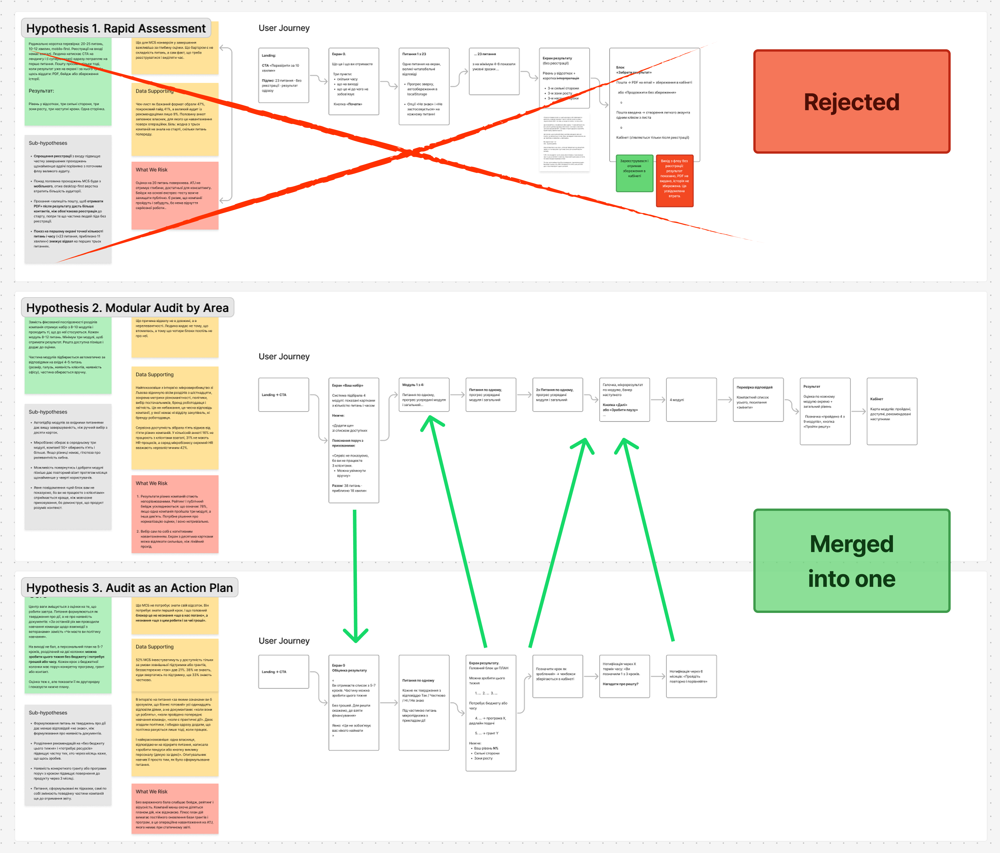
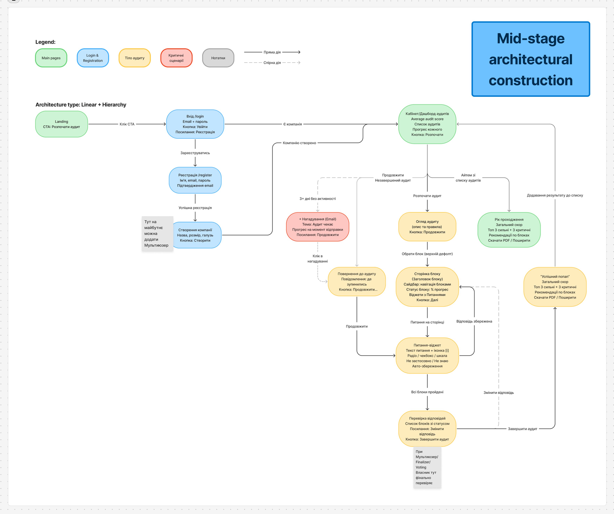
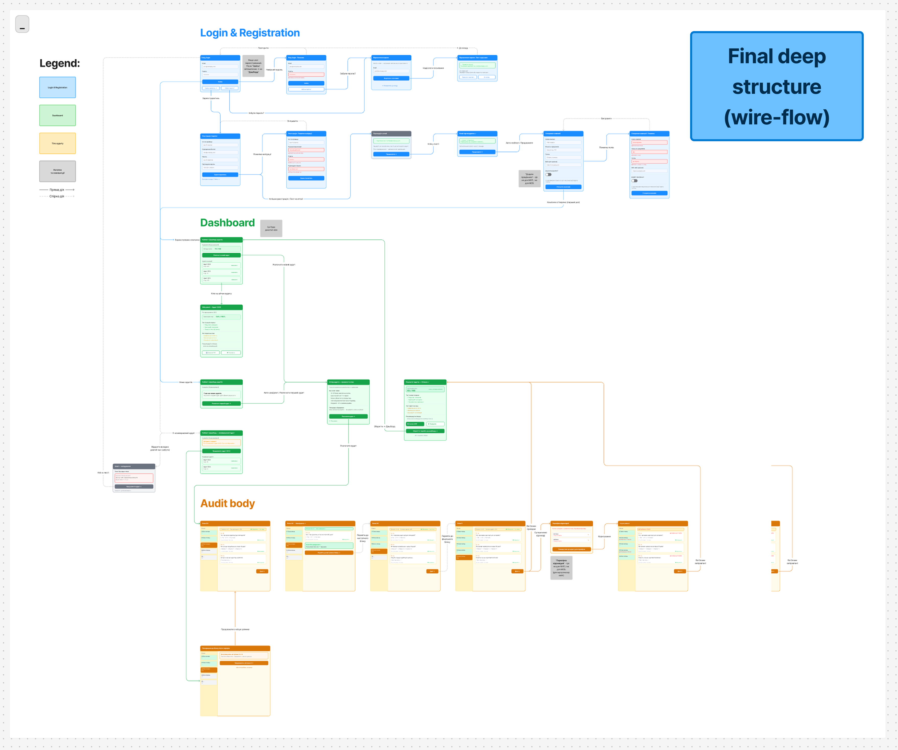
Key Solutions
Progressive journey, not a full list upfront
Problem
The ~300-question Google Sheet gave users no sense of scope or steps ahead of time. In interviews, the company Auchan said directly: it was unclear whether supporting documents were needed for each answer, which stretched completion out to 1–3 weeks.
Solution
I designed an onboarding flow that clearly explains time and steps, screening questions (10–20) that narrow the visible scope to relevant sections, and a sidebar showing progress as a percentage plus the weight of each step.
Why?
Showing the full scope upfront with no explanation of structure was the main source of uncertainty described by interview respondents.
Onboarding
Explains time and steps, and clarify other specifics before the user starts.
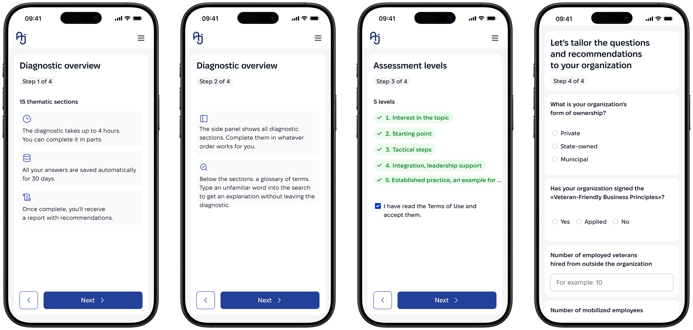
Side menu
Shows only the sections relevant to this organization — the rest stays out of view.
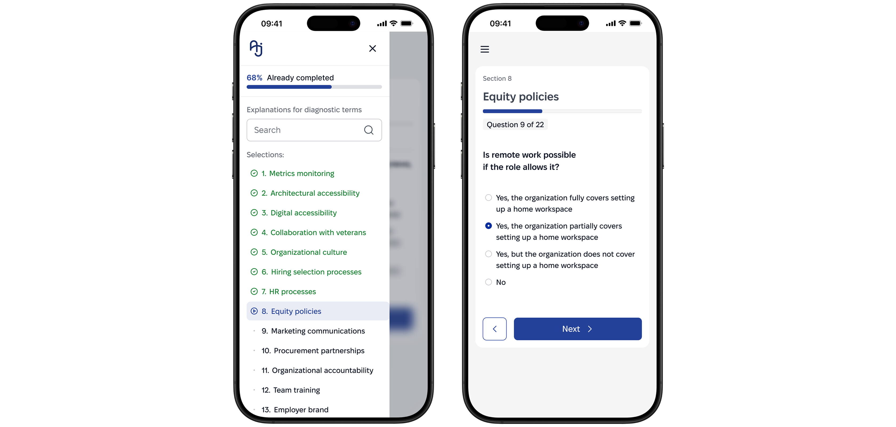
Modular Architecture for the SMB Questionnaire
Problem
The quantitative survey (71 responses) showed only 9% of SMBs want the full audit with recommendations, 47% want a checklist, and 41% want a step-by-step guide. The full scope of the large audit (roughly 400 questions) would scare this audience away.
Solution
I built a modular architecture: 4–5 entry questions automatically select the relevant company sections instead of a fixed full questionnaire. Scope is reduced to 30–40 questions depending on the selected set.
Why?
The survey showed SMBs want lighter commitment, not a full assessment. Modularity keeps depth only where relevant. Results show as a level, not a percentage or red, even when low, so a wary audience isn't discouraged.
Question Selection
The screening step narrows ~300 questions down to the sections that actually apply to this organization.

Questionnaire (Diagnostic)
One section per screen, with progress and navigation always visible — no wall of questions to scroll through.
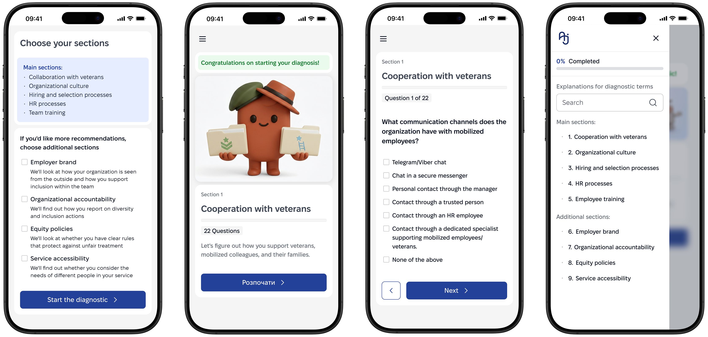
Section Levels Instead of an Overall Percentage (SMB)
Problem
A single overall percentage would let companies compare themselves to each other, but it doesn't fit the modular approach: different companies complete different sets of sections, so a direct percentage comparison would be misleading.
Solution
I replaced the overall percentage with a qualitative level per completed section, with no single final score. SMB also got a dedicated focus on smartphone use.
Why?
Removes the "you're at 60%, so you're bad" effect and matches the modular structure. A conscious trade-off: comparing companies against each other and any public benchmark are both ruled out by this decision.
Enterprise Result
Shows an overall percentage score.
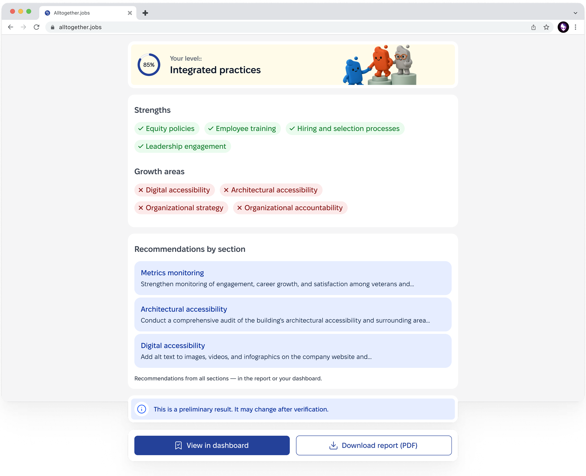
Small Medium Business Result
Shows qualitative levels per section, not a score.
Design System / AI usage
The product is built on an existing, already accessible design system created before this phase of work began. I adapted and extended components for new screens (onboarding, the progress sidebar, result cards) without changing the system's base tokens.
AI in the process. The large audit's clickable prototype was assembled through Figma Make (an AI tool) based on an approved wireflow and existing design-system components. AI did not generate the interface from scratch, I used it to assemble and arrange already-designed screens into a clickable prototype.
I didn't read the raw research data (the quantitative survey, interview transcripts) manually line by line - Claude structured it into tables. But selecting and filtering the final hypotheses from those tables was my own decision, not an automatic AI conclusion.

Foundation - Link

Components - Link
Other Core Features
Notifications
The system keeps the user informed throughout the process: confirms current status, clarifies legal and factual deadlines, and warns about possible gaps without blocking the main flow. If the user leaves the service, a reminder to complete the questionnaire is sent by email.
Your answers are saved for 30 days
Complete the diagnostic within this time so you don't have to start over.
Please note
You have an unfinished section 3 «Digital accessibility». You can return to it at any time.
A veteran is a person discharged from military service, regardless of combat participation. We also include people with combat experience in this category, even if they do not have official status as a veteran.
Definitions within the diagnostic
The «Metrics monitoring» section is complete. Thank you for your time and attention to this topic.
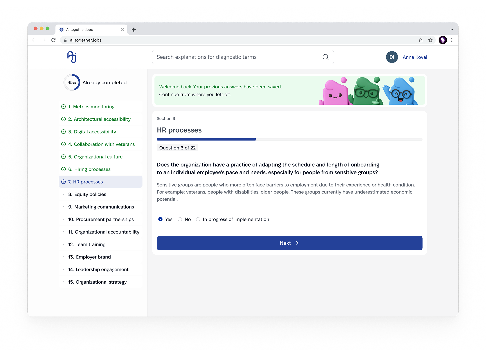
Survey body
The complex questionnaire became a modular system. The base pattern is borrowed from EdTech platforms, the same analogs referenced in Research: questions split into sections, step-by-step progression with navigation, visible progress, and free choice of question order. This removes the feeling of one endless questionnaire.
Multi-user
By default, at registration, a user can create a team and invite colleagues to complete the questionnaire together, speeding up the process in larger companies. If disputed or borderline answers remain after completion, they're surfaced to the primary user for a final decision.
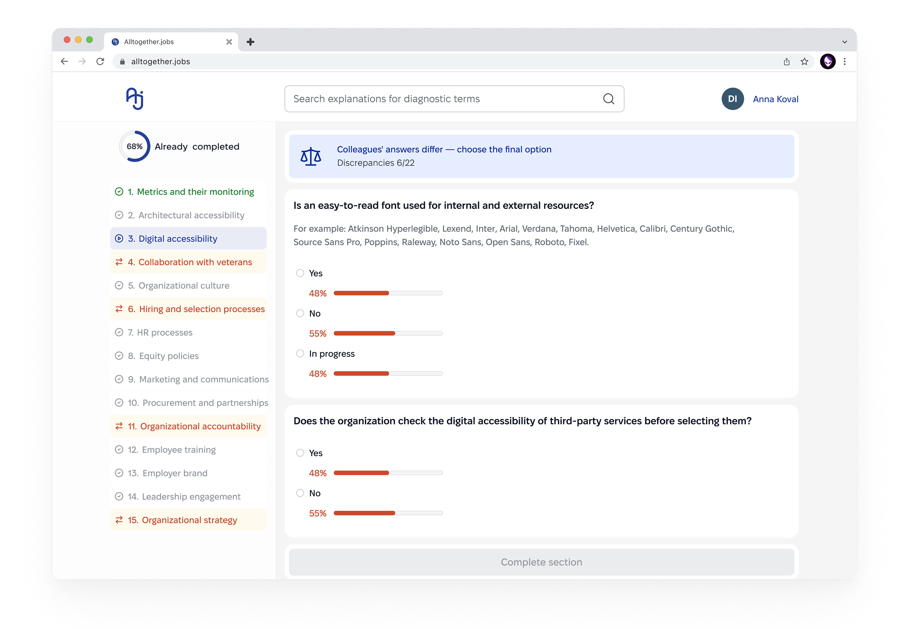
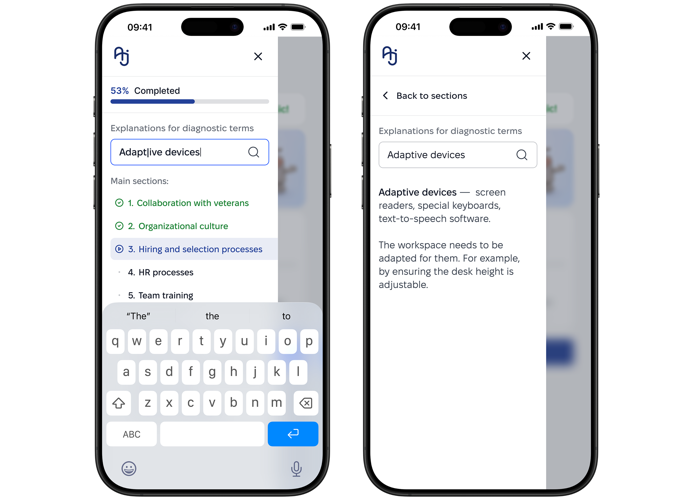
Term Glossary
The process uses specific terms that aren't always familiar to the audience, especially SMB. So we added a glossary directly in the section menu: explanations stay one click away, without leaving the main flow.
Diagnostic Cabinet
The user's profile includes a diagnostics dashboard — all current and past diagnostics are stored there. Users can track progress, download the documents they need, or resume a paused questionnaire.
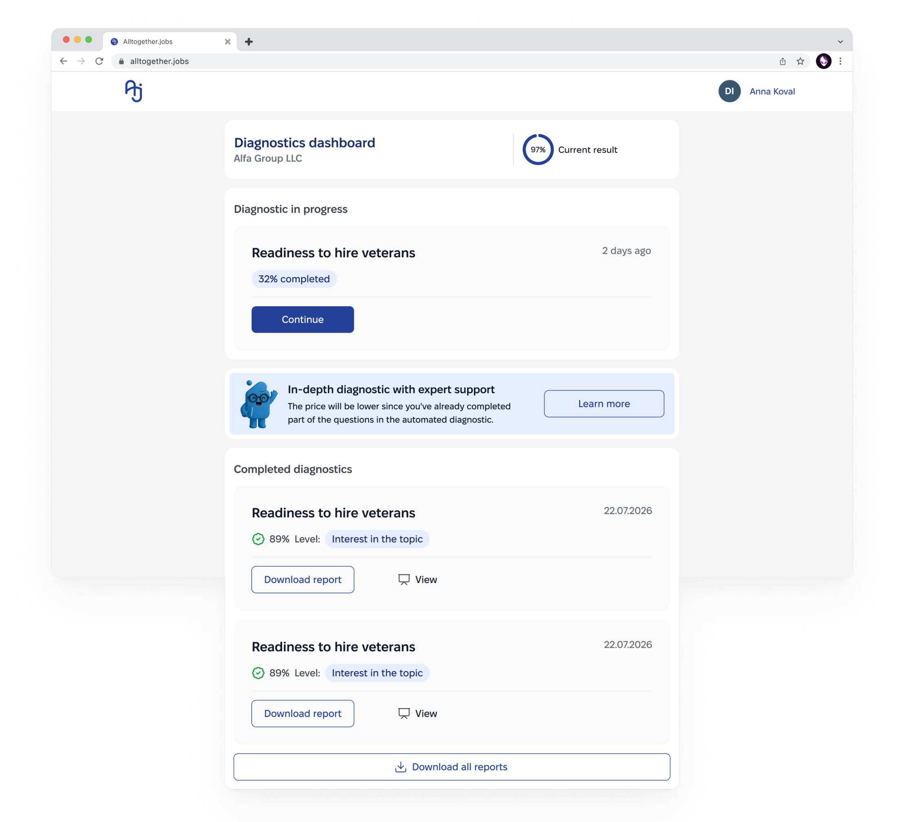
Results
The ~300-question survey became a modular service: two-stage filtering (10–20 screening questions → ~15–16 relevant sections) narrows the scope to each specific company. Completion is staged, with pauses between sessions, without losing progress.
A dashboard, navigation, and notifications (including email reminder on exit) keep the user in context. The product is mobile-adaptive, with a focus on accessibility a direct consequence of the project's theme, not an add-on.
In parallel, I refined the UI on the existing design system and interviewed methodologists and developers, this let me revisit part of the initial hypotheses and build an architecture suited to a two-platform service.
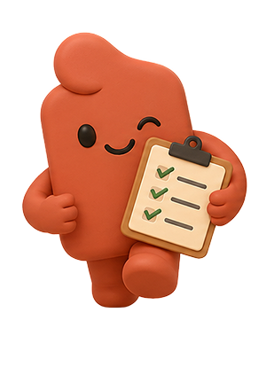
What's next?
Time constraints meant I didn't get to build a separate app for internal inclusivity — a logical direction to continue.
A more important next step is working with real data after launch: completion results, user behavior, iterating the questionnaire based on facts, not just hypotheses.
What I would do differently
I'd have focused harder on SMB from the start large businesses complete the questionnaire even with weaker UX, since it's part of their process; SMBs lose motivation more easily.
I'd have dug deeper into funnel analytics and looked at the service's overall architecture earlier, I started with the questionnaire and only saw the wider system later. I'd have paid more attention to team formation and roles from day one, instead of adapting to an already-formed process.
Reviews:
Ready to architect your next product?
Open for complex challenges and leadership roles. Select time to call and Hire Me below.
Book a Call